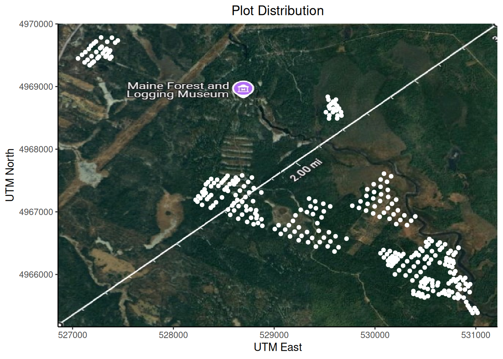
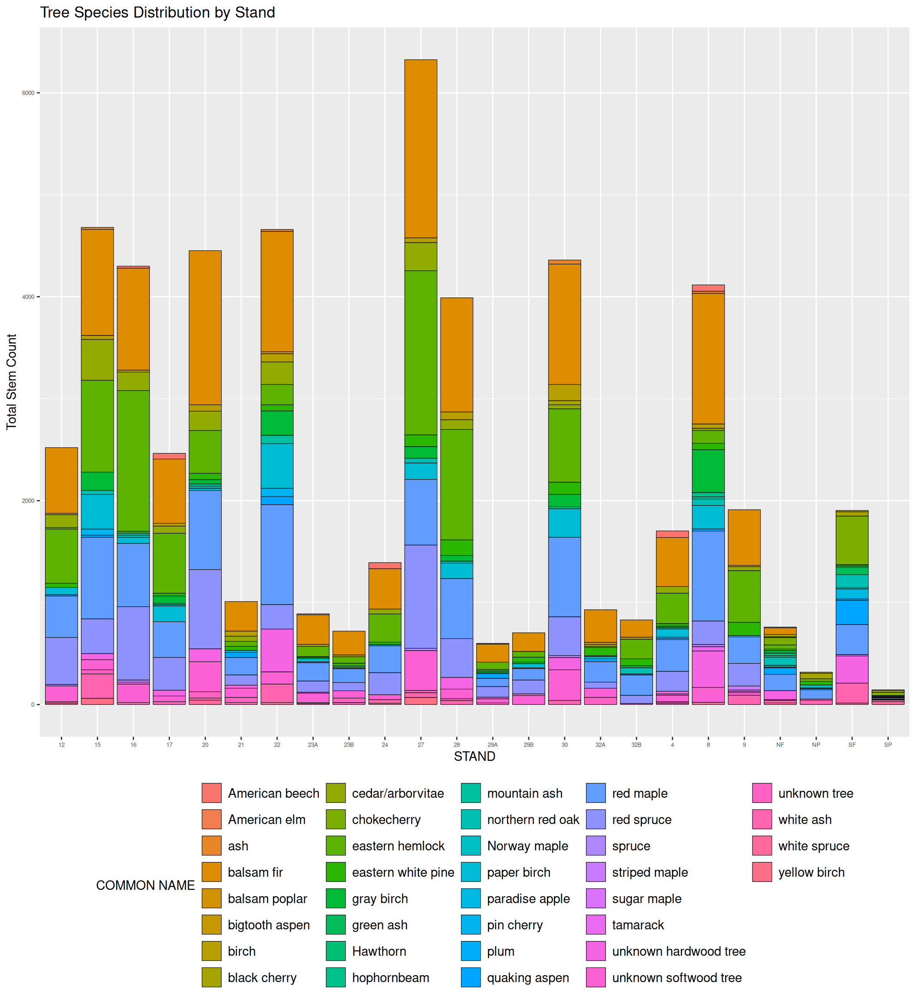
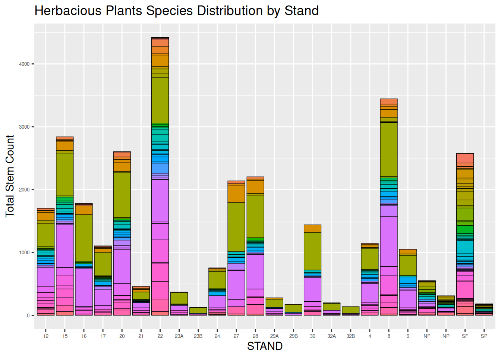
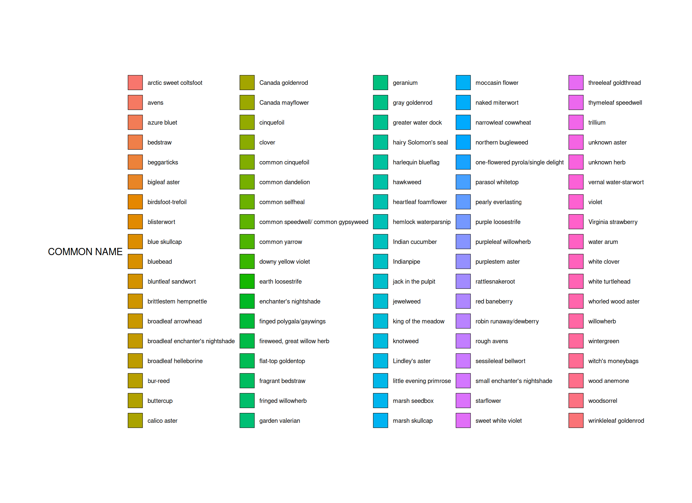
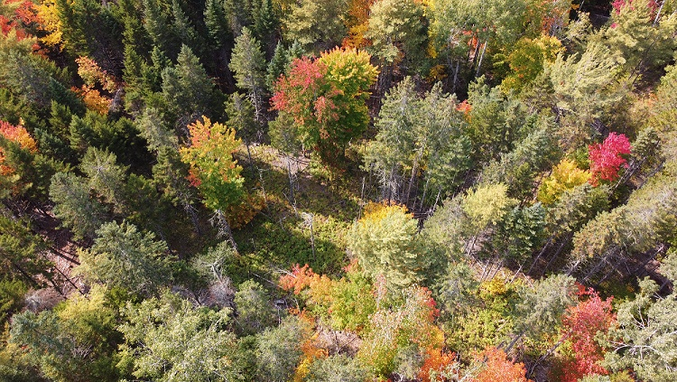

Introduction
The Penobscot Experimental Forest, located in east-central Maine, is one of 80 experimental forests designated by the Chief of the U.S. Forest Service for long-term ecological and management research. The data we are using was collected between 2006 and 2007 across 654 mil-acre plots (milplots) on 327 plots within 24 forest stands on an old field in the Penobscot Experimental Forest (PEF). We identified this stand by exploring the FIA DataMart and researching various forests until we found one suitable for our data wrangling needs.
We used a few packages for our analyses, they are all listed below in the following code:
Code
library(tidyverse)
library(readr)
library(ggplot2)
library(dplyr)
library(jpeg)
library(ggpubr)Methods
The Penobscot Experimental Forest data set package includes different data sets that analyze various aspects of the forest. For our project we decided to use the following data sets that shows, respectively, the vegetation, location of plots and species code: PEF_Understory_Vegetation_NIS.csv, Species_Code_List.csv, PEF_Plot_Locations_NIS.csv.
First, we load in the datasets and assign them to different names
Code
veg_data<- read_csv("PEF_Understory_Vegetation_NIS.csv")
spp_code <- read_csv("Species_Code_List.csv")
pef_plot_locations <- read_csv("PEF_Plot_Locations_NIS.csv")We can view how each dataset looks by running the following code:
Code
head(pef_plot_locations)# A tibble: 6 × 7
STAND PLOT UTM_EAST UTM_NORTH DATUM PROJECTION AUTHOR
<chr> <chr> <dbl> <dbl> <chr> <chr> <chr>
1 4 11 529428. 4966819. NAD83 UTM19N Kenefic
2 4 14 529212. 4966944. NAD83 UTM19N Kenefic
3 4 21 529470. 4966911. NAD83 UTM19N Kenefic
4 4 22 529385. 4966964. NAD83 UTM19N Kenefic
5 4 23 529325. 4966996. NAD83 UTM19N Hayashi
6 4 24 529264. 4967033. NAD83 UTM19N KeneficCode
head(spp_code)# A tibble: 6 × 5
SPECIESID `GROWTH HABIT` `GENUS SPECIES` `SCIENTIFIC NAME` `COMMON NAME`
<chr> <chr> <chr> <chr> <chr>
1 2ASTER herb -- -- unknown aster
2 2BRYO bryo -- -- unknown bryophyte
3 2FERN fern -- -- unknown fern
4 2FORB herb -- -- unknown herb
5 2GRAMIN gramin -- -- unknown graminoid
6 2GRASS gramin -- -- unknown grass Code
head(veg_data)# A tibble: 6 × 12
DATE TREATMENT STAND PLOT MILPLOT SPECIESID DEAD BOLE STEMCOUNT COVERCLASS
<chr> <chr> <chr> <chr> <chr> <chr> <dbl> <dbl> <dbl> <dbl>
1 7/30… FDL 4 11 A 2ASTER 0 0 29 4
2 7/30… FDL 4 11 A 2BRYO 0 0 NA 4
3 7/30… FDL 4 11 A 2SEDGE 0 0 999 3
4 7/30… FDL 4 11 A ABBA 0 0 1 1
5 7/30… FDL 4 11 A ACRU 0 0 1 1
6 7/30… FDL 4 11 A ALLBRYO 0 0 NA 4
# ℹ 2 more variables: EXTRACOVER <dbl>, HAVESPECIMEN <dbl>None of the three datasets above had all the information we wanted to focus on; therefore, by joining the three datasets, we were able to tie forest stands/plots with species data and locations.
Code
penobscot<-left_join(veg_data,spp_code,by="SPECIESID" )
penobscot2<-left_join(penobscot,pef_plot_locations,by="STAND","PLOT")Warning in left_join(penobscot, pef_plot_locations, by = "STAND", "PLOT"): Detected an unexpected many-to-many relationship between `x` and `y`.
ℹ Row 1 of `x` matches multiple rows in `y`.
ℹ Row 1 of `y` matches multiple rows in `x`.
ℹ If a many-to-many relationship is expected, set `relationship =
"many-to-many"` to silence this warning.This is how the resulting dataset looks
Code
head(penobscot2)# A tibble: 6 × 22
DATE TREATMENT STAND PLOT.x MILPLOT SPECIESID DEAD BOLE STEMCOUNT
<chr> <chr> <chr> <chr> <chr> <chr> <dbl> <dbl> <dbl>
1 7/30/2007 FDL 4 11 A 2ASTER 0 0 29
2 7/30/2007 FDL 4 11 A 2ASTER 0 0 29
3 7/30/2007 FDL 4 11 A 2ASTER 0 0 29
4 7/30/2007 FDL 4 11 A 2ASTER 0 0 29
5 7/30/2007 FDL 4 11 A 2ASTER 0 0 29
6 7/30/2007 FDL 4 11 A 2ASTER 0 0 29
# ℹ 13 more variables: COVERCLASS <dbl>, EXTRACOVER <dbl>, HAVESPECIMEN <dbl>,
# `GROWTH HABIT` <chr>, `GENUS SPECIES` <chr>, `SCIENTIFIC NAME` <chr>,
# `COMMON NAME` <chr>, PLOT.y <chr>, UTM_EAST <dbl>, UTM_NORTH <dbl>,
# DATUM <chr>, PROJECTION <chr>, AUTHOR <chr>Results
After joining the three tibbles, we created four different plots within the data of the 24 stands. The first graph, shows a map of the plot distribution within the Penobscot Experimental forest. For this code, we used the “pef_plot_locations” dataset, and a geographic projection image. This image was taken by converting the UTM to Lat Long using the calculator provided by:
https://www.engineeringtoolbox.com/utm-latitude-longitude-d_1370.html
After converting two opposite corner coordinates for the area, we used Google maps to capture a matching satellite background image. It is interesting to note that the projections are slightly misaligned in our Plot distribution. This is probably due to the coordinate conversions and the time difference between when the satellite image was taken and when the data was collected.
Code
penob_sat <- readJPEG ("plot_overlay2.jpg")
plot1 <- pef_plot_locations %>%
ggplot(aes(x = UTM_EAST, y = UTM_NORTH)) +
background_image(penob_sat) +
geom_point(color = "white") +
labs(x = "UTM East", y="UTM North", title = "Plot Distribution") +
theme_classic() +
theme(plot.title = element_text(hjust=0.5))
plot1
The two graphs below, show the species distribution bar graphs of the entirety of the Tree category data, and the Herbaceous Plants in the forest. These graphs are a testament to the sheer number of data points that have been collected in this particular forest. When all the categories are joined, there are over 100K data points.
Code
penobscot_trees <- penobscot2 %>%
filter(`GROWTH HABIT` == "tree", !is.na(`GROWTH HABIT`)) %>%
group_by(STAND,`COMMON NAME`)%>%
ggplot(aes(x =STAND,fill= `COMMON NAME`)) +
geom_bar(color="black",linewidth=0.2)+
labs(title = "Tree Species Distribution by Stand",y="Total Stem Count")+
theme(legend.position = "bottom")+
theme(axis.text=element_text(size=5), legend.text = element_text(size=7)+
theme_classic())
penobscot_trees
Code
penobscot_herb <- penobscot2 %>%
filter(`GROWTH HABIT` == "herb", !is.na(`GROWTH HABIT`)) %>%
group_by(STAND,`COMMON NAME`)%>%
ggplot(aes(x =STAND ,fill= `COMMON NAME`)) +
geom_bar(color="black",linewidth=0.2)+
labs(title = "Herbacious Plants Species Distribution by Stand",
y="Total Stem Count")+
theme(legend.position = "bottom")+
theme(axis.text=element_text(size=5), legend.text = element_text(size=7))
herb_legend<-get_legend(penobscot_herb)
penobscot_herb<-penobscot_herb+(theme(legend.position = "none"))
penobscot_herb
Code
as_ggplot(herb_legend)
Conclusions
It’s clear that the Penobscot Experimental Forest, with all of its 327 plots, positively contributes to research by serving as an experimental hub for biodiversity, sustainable forestry practices and conservation. This forest serves as an example of how we should approach our forest with care, always aiming to extract the best out of it while still preserving it.
